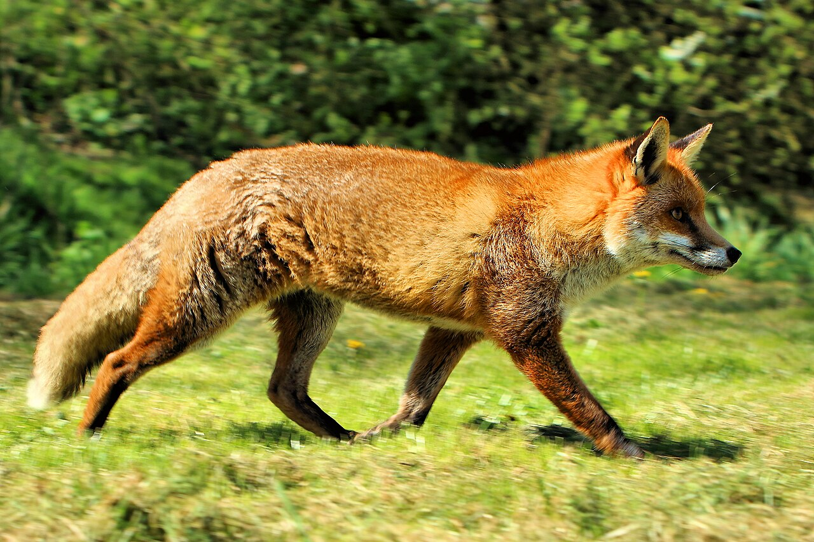

Данные за 2022 год, тыс. особей
Источник: ВНИИОЗ им. проф. Б.М. Житкова, г. Киров

Зачем считают численность лисиц?
Лисица — хищник, регулирующий численность грызунов. Однако чрезмерный рост её популяции наносит ущерб охотничьему хозяйству и повышает интенсивность распространения бешенства. Учёт численности обеспечивает поддержание баланса в экосистеме.
Фото: Airwolfhound, CC BY-SA 2.0